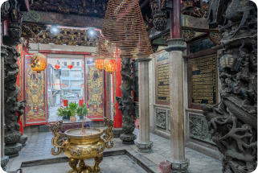
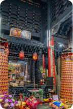
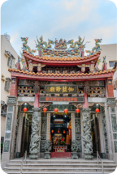
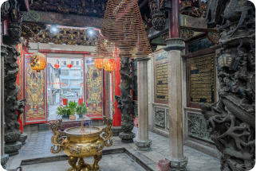
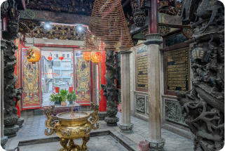
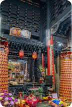
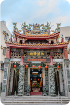
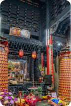
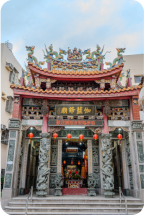

西螺伽藍爺廟

 
伽藍爺公
昭和5年康民阜物匾
嘉慶22年石香爐
營業時間
週一至週日06:00~21:00
地址
雲林縣西螺鎮鎮遠東街2巷12號
電話
055874790
詳細介紹
西螺地區的伽藍爺信仰相當具有地方特色，民間相傳其為城隍爺之護法神，專司懲罰邪惡、明辨是非，具有轄管地祇的境主神職能。位於延平老街尾的伽藍爺廟，是西螺街最早的「地頭神」之一，伽藍爺廟位於西螺延平老街尾端，在地人稱呼這個區域為街尾，從市仔頭（口店土地公）延伸到街肚福興宮、街尾伽藍爺廟，早期的西螺人以這三座廟宇來界定舊西螺街的空間範圍。相傳伽藍爺廟和福興宮太平媽的信仰肇基年代皆為康熙56年（1717），西螺鎮內各宮廟舉凡迎神廟會、遶境皆會迎請伽藍爺擔任先鋒，年尾謝平安，各聚落也都會請伽藍爺回庄以酬謝神恩。
每年農曆10月18日伽藍爺廟謝平安結束後，各聚落始能進行酬神，而依照慣例，伽藍爺廟謝平安當日均會至彰化南瑤宮盈請媽祖前來做客看戲。廟內陪祀神天上聖母係清朝時彰化南瑤宮天上聖母遶境時，至本宮駐駕休息所留，此為本廟與南瑤宮結緣之由來。
知道更多

 

 


